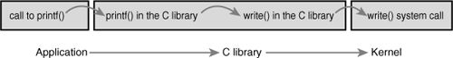
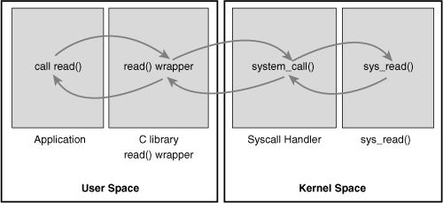
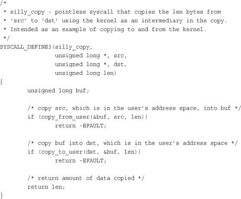
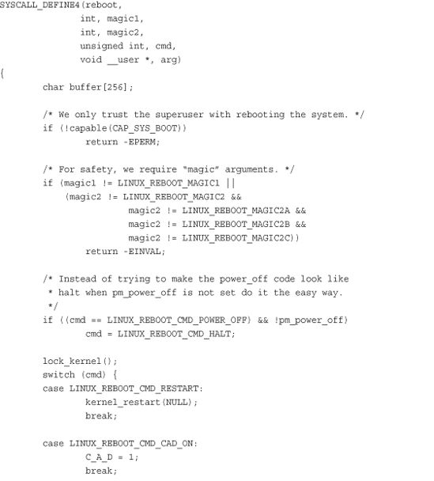
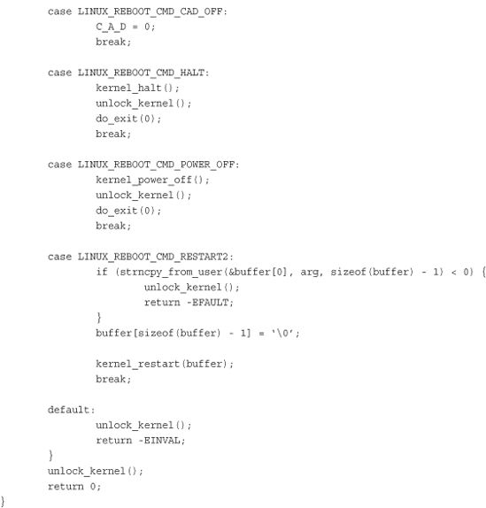
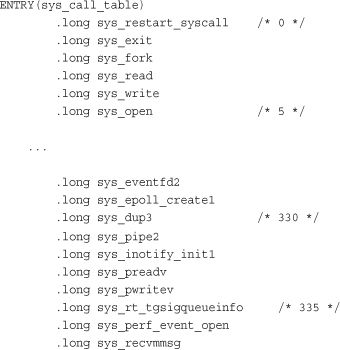
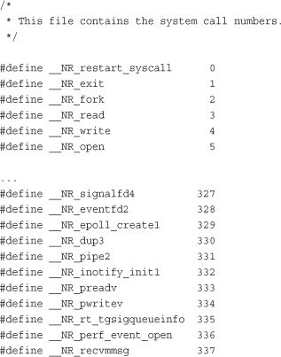
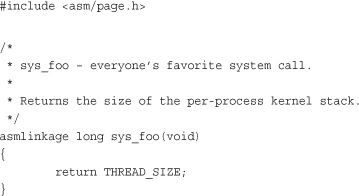
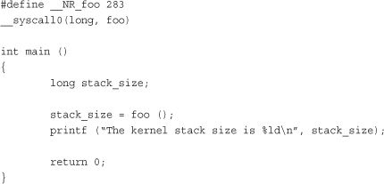

In any modern operating system, the kernel provides a set of interfaces by which processes running in user-space can interact with the system. These interfaces give applications controlled access to hardware, a mechanism with which to create new processes and communicate with existing ones, and the capability to request other operating system resources. The interfaces act as the messengers between applications and the kernel, with the applications issuing various requests and the kernel fulfilling them (or returning an error). The existence of these interfaces, and the fact that applications are not free to directly do whatever they want, is key to providing a stable system.
System calls provide a layer between the hardware and user-space processes. This layer serves three primary purposes. First, it provides an abstracted hardware interface for user-space. When reading or writing from a file, for example, applications are not concerned with the type of disk, media, or even the type of filesystem on which the file resides. Second, system calls ensure system security and stability. With the kernel acting as a middleman between system resources and user-space, the kernel can arbitrate access based on permissions, users, and other criteria. For example, this arbitration prevents applications from incorrectly using hardware, stealing other processes’ resources, or otherwise doing harm to the system. Finally, a single common layer between user-space and the rest of the system allows for the virtualized system provided to processes, discussed in Chapter 3, “Process Management.” If applications were free to access system resources without the kernel’s knowledge, it would be nearly impossible to implement multitasking and virtual memory, and certainly impossible to do so with stability and security. In Linux, system calls are the only means user-space has of interfacing with the kernel; they are the only legal entry point into the kernel other than exceptions and traps. Indeed, other interfaces, such as device files or /proc, are ultimately accessed via system calls. Interestingly, Linux implements far fewer system calls than most systems.1 This chapter addresses the role and implementation of system calls in Linux.
1 There are about 335 system calls are on x86. (Each architecture is allowed to define unique system calls.) Although not all operating systems publish their exact system calls, some operating systems are estimated to have more than one thousand. In the previous edition of this book, x86 had only 250 system calls.
Typically, applications are programmed against an Application Programming Interface (API) implemented in user-space, not directly to system calls. This is important because no direct correlation is needed between the interfaces that applications make use of and the actual interface provided by the kernel. An API defines a set of programming interfaces used by applications. Those interfaces can be implemented as a system call, implemented through multiple system calls, or implemented without the use of system calls at all. The same API can exist on multiple systems and provide the same interface to applications while the implementation of the API itself can differ greatly from system to system. See Figure 5.1 for an example of the relationship between a POSIX API, the C library, and system calls.
Figure 5.1. The relationship between applications, the C library, and the kernel with a call to printf().

One of the more common application programming interfaces in the Unix world is based on the POSIX standard. Technically, POSIX is composed of a series of standards from the IEEE2 that aim to provide a portable operating system standard roughly based on Unix. Linux strives to be POSIX- and SUSv3-compliant where applicable.
2 IEEE (eye-triple-E) is the Institute of Electrical and Electronics Engineers. It is a nonprofit professional association involved in numerous technical areas and responsible for many important standards, such as POSIX. For more information, visit http://www.ieee.org.
POSIX is an excellent example of the relationship between APIs and system calls. On most Unix systems, the POSIX-defined API calls have a strong correlation to the system calls. Indeed, the POSIX standard was created to resemble the interfaces provided by earlier Unix systems. On the other hand, some systems that are rather un-Unix, such as Microsoft Windows, offer POSIX-compatible libraries.
The system call interface in Linux, as with most Unix systems, is provided in part by the C library. The C library implements the main API on Unix systems, including the standard C library and the system call interface. The C library is used by all C programs and, because of C’s nature, is easily wrapped by other programming languages for use in their programs. The C library additionally provides the majority of the POSIX API.
From the application programmer’s point of view, system calls are irrelevant; all the programmer is concerned with is the API. Conversely, the kernel is concerned only with the system calls; what library calls and applications make use of the system calls is not of the kernel’s concern. Nonetheless, it is important for the kernel to keep track of the potential uses of a system call and keep the system call as general and flexible as possible.
A meme related to interfaces in Unix is “Provide mechanism, not policy.” In other words, Unix system calls exist to provide a specific function in an abstract sense. The manner in which the function is used is not any of the kernel’s business.
System calls (often called syscalls in Linux) are typically accessed via function calls defined in the C library. They can define zero, one, or more arguments (inputs) and might result in one or more side effects,3 for example writing to a file or copying some data into a provided pointer. System calls also provide a return value of type long4 that signifies success or error—usually, although not always, a negative return value denotes an error. A return value of zero is usually (but again not always) a sign of success. The C library, when a system call returns an error, writes a special error code into the global errno variable. This variable can be translated into human-readable errors via library functions such as perror().
3
Note the “might” here. Although nearly all system calls have a side effect (that is, they result in some change of the system’s state), a few syscalls, such as
getpid(), merely return some data from the kernel.
4
The use of type
long
is for compatibility with 64-bit architectures.
Finally, system calls have a defined behavior. For example, the system call getpid() is defined to return an integer that is the current process’s PID. The implementation of this syscall in the kernel is simple:
SYSCALL_DEFINE0(getpid)
{
return task_tgid_vnr(current); // returns current->tgid
}
Note that the definition says nothing of the implementation. The kernel must provide the intended behavior of the system call but is free to do so with whatever implementation it wants as long as the result is correct. Of course, this system call is as simple as they come, and there are not too many other ways to implement it.5
5
You might be wondering why does getpid() return tgid, the thread group ID? In normal processes, the TGID is equal to the PID. With threads, the TGID is the same for all threads in a thread group. This enables the threads to call
getpid()
and get the same PID.
SYSCALL_DEFINE0 is simply a macro that defines a system call with no parameters (hence the 0). The expanded code looks like this:
asmlinkage long sys_getpid(void)
Let’s look at how system calls are defined. First, note the asmlinkage modifier on the function definition. This is a directive to tell the compiler to look only on the stack for this function’s arguments. This is a required modifier for all system calls. Second, the function returns a long. For compatibility between 32- and 64-bit systems, system calls defined to return an int in user-space return a long in the kernel. Third, note that the getpid() system call is defined as sys_getpid() in the kernel. This is the naming convention taken with all system calls in Linux: System call bar() is implemented in the kernel as function sys_bar().
In Linux, each system call is assigned a syscall number. This is a unique number that is used to reference a specific system call. When a user-space process executes a system call, the syscall number identifies which syscall was executed; the process does not refer to the syscall by name.
The syscall number is important; when assigned, it cannot change, or compiled applications will break. Likewise, if a system call is removed, its system call number cannot be recycled, or previously compiled code would aim to invoke one system call but would in reality invoke another. Linux provides a “not implemented” system call, sys_ni_syscall(), which does nothing except return -ENOSYS, the error corresponding to an invalid system call. This function is used to “plug the hole” in the rare event that a syscall is removed or otherwise made unavailable.
The kernel keeps a list of all registered system calls in the system call table, stored in sys_call_table. This table is architecture; on x86-64 it is defined in arch/i386/kernel/syscall_64.c. This table assigns each valid syscall to a unique syscall number.
System calls in Linux are faster than in many other operating systems. This is partly because of Linux’s fast context switch times; entering and exiting the kernel is a streamlined and simple affair. The other factor is the simplicity of the system call handler and the individual system calls themselves.
It is not possible for user-space applications to execute kernel code directly. They cannot simply make a function call to a method existing in kernel-space because the kernel exists in a protected memory space. If applications could directly read and write to the kernel’s address space, system security and stability would be nonexistent.
Instead, user-space applications must somehow signal to the kernel that they want to execute a system call and have the system switch to kernel mode, where the system call can be executed in kernel-space by the kernel on behalf of the application.
The mechanism to signal the kernel is a software interrupt: Incur an exception, and the system will switch to kernel mode and execute the exception handler. The exception handler, in this case, is actually the system call handler. The defined software interrupt on x86 is interrupt number 128, which is incurred via the int $0x80 instruction. It triggers a switch to kernel mode and the execution of exception vector 128, which is the system call handler. The system call handler is the aptly named function system_call(). It is architecture-dependent; on x86-64 it is implemented in assembly in entry_64.S.6 Recently, x86 processors added a feature known as sysenter. This feature provides a faster, more specialized way of trapping into a kernel to execute a system call than using the int interrupt instruction. Support for this feature was quickly added to the kernel. Regardless of how the system call handler is invoked, however, the important notion is that somehow user-space causes an exception or trap to enter the kernel.
6 Much of the following description of the system call handler is based on the x86 version. They are all similar.
Simply entering kernel-space alone is not sufficient because multiple system calls exist, all of which enter the kernel in the same manner. Thus, the system call number must be passed into the kernel. On x86, the syscall number is fed to the kernel via the eax register. Before causing the trap into the kernel, user-space sticks in eax the number corresponding to the desired system call. The system call handler then reads the value from eax. Other architectures do something similar.
The system_call() function checks the validity of the given system call number by comparing it to NR_syscalls. If it is larger than or equal to NR_syscalls, the function returns -ENOSYS. Otherwise, the specified system call is invoked:
call *sys_call_table(,%rax,8)
Because each element in the system call table is 64 bits (8 bytes), the kernel multiplies the given system call number by four to arrive at its location in the system call table. On x86-32, the code is similar, with the 8 replaced by 4. See Figure 5.2.
Figure 5.2. Invoking the system call handler and executing a system call.

In addition to the system call number, most syscalls require that one or more parameters be passed to them. Somehow, user-space must relay the parameters to the kernel during the trap. The easiest way to do this is via the same means that the syscall number is passed: The parameters are stored in registers. On x86-32, the registers ebx, ecx, edx, esi, and edi contain, in order, the first five arguments. In the unlikely case of six or more arguments, a single register is used to hold a pointer to user-space where all the parameters are stored.
The return value is sent to user-space also via register. On x86, it is written into the eax register.
The actual implementation of a system call in Linux does not need to be concerned with the behavior of the system call handler. Thus, adding a new system call to Linux is relatively easy. The hard work lies in designing and implementing the system call; registering it with the kernel is simple. Let’s look at the steps involved in writing a new system call for Linux.
The first step in implementing a system call is defining its purpose. What will it do? The syscall should have exactly one purpose. Multiplexing syscalls (a single system call that does wildly different things depending on a flag argument) is discouraged in Linux. Look at ioctl() as an example of what not to do.
What are the new system call’s arguments, return value, and error codes? The system call should have a clean and simple interface with the smallest number of arguments possible. The semantics and behavior of a system call are important; they must not change, because existing applications will come to rely on them. Be forward thinking; consider how the function might change over time. Can new functionality be added to your system call or will any change require an entirely new function? Can you easily fix bugs without breaking backward compatibility? Many system calls provide a flag argument to address forward compatibility. The flag is not used to multiplex different behavior across a single system call—as mentioned, that is not acceptable—but to enable new functionality and options without breaking backward compatibility or needing to add a new system call.
Designing the interface with an eye toward the future is important. Are you needlessly limiting the function? Design the system call to be as general as possible. Do not assume its use today will be the same as its use tomorrow. The purpose of the system call will remain constant but its uses may change. Is the system call portable? Do not make assumptions about an architecture’s word size or endianness. Chapter 19, “Portability,” discusses these issues. Make sure you are not making poor assumptions that will break the system call in the future. Remember the Unix motto: “Provide mechanism, not policy.”
When you write a system call, you need to realize the need for portability and robustness, not just today but in the future. The basic Unix system calls have survived this test of time; most of them are just as useful and applicable today as they were 30 years ago!
System calls must carefully verify all their parameters to ensure that they are valid and legal. The system call runs in kernel-space, and if the user can pass invalid input into the kernel without restraint, the system’s security and stability can suffer.
For example, file I/O syscalls must check whether the file descriptor is valid. Process-related functions must check whether the provided PID is valid. Every parameter must be checked to ensure it is not just valid and legal, but correct. Processes must not ask the kernel to access resources to which the process does not have access.
One of the most important checks is the validity of any pointers that the user provides. Imagine if a process could pass any pointer into the kernel, unchecked, with warts and all, even passing a pointer to which it did not have read access! Processes could then trick the kernel into copying data for which they did not have access permission, such as data belonging to another process or data mapped unreadable. Before following a pointer into user-space, the system must ensure that
• The pointer points to a region of memory in user-space. Processes must not be able to trick the kernel into reading data in kernel-space on their behalf.
• The pointer points to a region of memory in the process’s address space. The process must not be able to trick the kernel into reading someone else’s data.
• If reading, the memory is marked readable. If writing, the memory is marked writable. If executing, the memory is marked executable. The process must not be able to bypass memory access restrictions.
The kernel provides two methods for performing the requisite checks and the desired copy to and from user-space. Note kernel code must never blindly follow a pointer into user-space! One of these two methods must always be used.
For writing into user-space, the method copy_to_user() is provided. It takes three parameters. The first is the destination memory address in the process’s address space. The second is the source pointer in kernel-space. Finally, the third argument is the size in bytes of the data to copy.
For reading from user-space, the method copy_from_user() is analogous to copy_to_user(). The function reads from the second parameter into the first parameter the number of bytes specified in the third parameter.
Both of these functions return the number of bytes they failed to copy on error. On success, they return zero. It is standard for the syscall to return -EFAULT in the case of such an error.
Let’s consider an example system call that uses both copy_from_user() and copy_to_user(). This syscall, silly_copy(), is utterly worthless; it copies data from its first parameter into its second. This is suboptimal in that it involves an intermediate and extraneous copy into kernel-space for no gain. But it helps illustrate the point.

Both copy_to_user() and copy_from_user() may block. This occurs, for example, if the page containing the user data is not in physical memory but is swapped to disk. In that case, the process sleeps until the page fault handler can bring the page from the swap file on disk into physical memory.
A final possible check is for valid permission. In older versions of Linux, it was standard for syscalls that require root privilege to use suser(). This function merely checked whether a user was root; this is now removed and a finer-grained “capabilities” system is in place. The new system enables specific access checks on specific resources. A call to capable() with a valid capabilities flag returns nonzero if the caller holds the specified capability and zero otherwise. For example, capable(CAP_SYS_NICE) checks whether the caller has the ability to modify nice values of other processes. By default, the superuser possesses all capabilities and nonroot possesses none. For example, here is the reboot() system call. Note how its first step is ensuring that the calling process has the CAP_SYS_REBOOT. If that one conditional statement were removed, any process could reboot the system.


See <linux/capability.h> for a list of all capabilities and what rights they entail.
As discussed in Chapter 3, the kernel is in process context during the execution of a system call. The current pointer points to the current task, which is the process that issued the syscall.
In process context, the kernel is capable of sleeping (for example, if the system call blocks on a call or explicitly calls schedule()) and is fully preemptible. These two points are important. First, the capability to sleep means that system calls can make use of the majority of the kernel’s functionality. As we will see in Chapter 7, “Interrupts and Interrupt Handlers,” the capability to sleep greatly simplifies kernel programming.7 The fact that process context is preemptible implies that, like user-space, the current task may be preempted by another task. Because the new task may then execute the same system call, care must be exercised to ensure that system calls are reentrant. Of course, this is the same concern that symmetrical multiprocessing introduces. Synchronizing reentrancy is covered in Chapter 9, “An Introduction to Kernel Synchronization,” and Chapter 10, “Kernel Synchronization Methods.”
7 Interrupt handlers cannot sleep and thus are much more limited in what they can do than system calls running in process context.
When the system call returns, control continues in system_call(), which ultimately switches to user-space and continues the execution of the user process.
After the system call is written, it is trivial to register it as an official system call:
<asm/unistd.h>.kernel/, such as sys.c, which is home to miscellaneous system calls.Look at these steps in more detail with a fictional system call, foo(). First, we want to add sys_foo() to the system call table. For most architectures, the table is located in entry.S and looks like this:

The new system call is then appended to the tail of this list:
.long sys_foo
Although it is not explicitly specified, the system call is then given the next subsequent syscall number—in this case, 338. For each architecture you want to support, the system call must be added to the architecture’s system call table. The system call does not need to receive the same syscall number under each architecture, as the system call number is part of the architecture’s unique ABI. Usually, you would want to make the system call available to each architecture. Note the convention of placing the number in a comment every five entries; this makes it easy to find out which syscall is assigned which number.
Next, the system call number is added to <asm/unistd.h>, which currently looks somewhat like this:

The following is then added to the end of the list:
#define __NR_foo 338
Finally, the actual foo() system call is implemented. Because the system call must be compiled into the core kernel image in all configurations, in this example we define it in kernel/sys.c. You should put it wherever the function is most relevant; for example, if the function is related to scheduling, you could define it in kernel/sched.c.

That is it! Boot this kernel and user-space can invoke the foo() system call.
Generally, the C library provides support for system calls. User applications can pull in function prototypes from the standard headers and link with the C library to use your system call (or the library routine that, in turn, uses your syscall call). If you just wrote the system call, however, it is doubtful that glibc already supports it!
Thankfully, Linux provides a set of macros for wrapping access to system calls. It sets up the register contents and issues the trap instructions. These macros are named _syscalln(), where n is between 0 and 6. The number corresponds to the number of parameters passed into the syscall because the macro needs to know how many parameters to expect and, consequently, push into registers. For example, consider the system call open(), defined as
long open(const char *filename, int flags, int mode)
The syscall macro to use this system call without explicit library support would be
#define __NR_open 5
_syscall3(long, open, const char *, filename, int, flags, int, mode)
Then, the application can simply call open().
For each macro, there are 2 + 2 × n parameters. The first parameter corresponds to the return type of the syscall. The second is the name of the system call. Next follows the type and name for each parameter in order of the system call. The __NR_open define is in <asm/unistd.h>; it is the system call number. The _syscall3 macro expands into a C function with inline assembly; the assembly performs the steps discussed in the previous section to push the system call number and parameters into the correct registers and issue the software interrupt to trap into the kernel. Placing this macro in an application is all that is required to use the open() system call.
Let’s write the macro to use our splendid new foo() system call and then write some test code to show off our efforts.

The previous sections have shown that it is easy to implement a new system call, but that in no way should encourage you to do so. Indeed, you should exercise caution and restraint in adding new syscalls. Often, much more viable alternatives to providing a new system call are available. Let’s look at the pros, cons, and alternatives.
The pros of implementing a new interface as a syscall are as follows:
• System calls are simple to implement and easy to use.
• System call performance on Linux is fast.
The cons:
• You need a syscall number, which needs to be officially assigned to you.
• After the system call is in a stable series kernel, it is written in stone. The interface cannot change without breaking user-space applications.
• Each architecture needs to separately register the system call and support it.
• System calls are not easily used from scripts and cannot be accessed directly from the filesystem.
• Because you need an assigned syscall number, it is hard to maintain and use a system call outside of the master kernel tree.
• For simple exchanges of information, a system call is overkill.
The alternatives:
• Implement a device node and
read()andwrite()to it. Useioctl()to manipulate specific settings or retrieve specific information.
• Certain interfaces, such as semaphores, can be represented as file descriptors and manipulated as such.
• Add the information as a file to the appropriate location in sysfs.
For many interfaces, system calls are the correct answer. Linux, however, has tried to avoid simply adding a system call to support each new abstraction that comes along. The result has been an incredibly clean system call layer with few regrets or deprecations (interfaces no longer used or supported). The slow rate of addition of new system calls is a sign that Linux is a relatively stable and feature-complete operating system.
In this chapter, we discussed what system calls are and how they relate to library calls and the application programming interface (API). We then looked at how the Linux kernel implements system calls and the chain of events required to execute a system call: trapping into the kernel, transmitting the syscall number and any arguments, executing the correct system call function, and returning to user-space with the syscall’s return value.
We then went over how to add system calls and provided a simple example of using a new system call from user-space. The whole process was quite easy! As the simplicity of adding a new system call demonstrates, the work is all in the syscall’s implementation. The rest of this book discusses concepts and kernel interfaces needed to write well-behaved, optimal, and safe system calls.
Finally, we wrapped up the chapter with a discussion on the pros and cons of implementing system calls and a brief list of the alternatives to adding new ones.